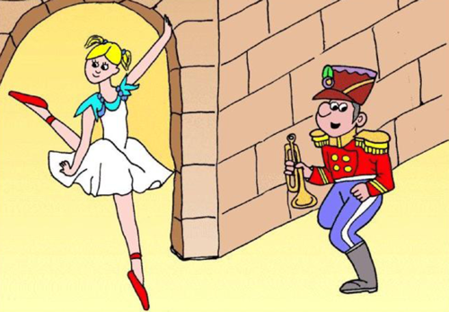
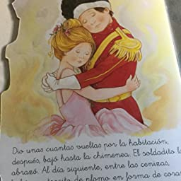

El Soldadito de Plomo
Había una vez un niño que tenía muchísimos juguetes. Pero, un día, su abuelo le regaló uno muy especial que aún no tenía y que se convirtió en el mejor de todos. Se trataba de una caja de madera muy hermosa, que contenía en su interior todo un conjunto de soldaditos de plomo realizados a mano y, con mucho tiento, a base de fuego y metal.
– ¡Soldaditos de plomo! ¡Muchas gracias, abuelo!- Dijo con alegría el niño tras recibir su regalo.
Tras esto el pequeño fue sacando cuidadosamente, uno a uno, a todos y cada uno de aquellos soldados de la caja, y los depositó sobre su mesita de escribir uno detrás de otro en formación. ¡Qué elegantes se veían! Parecían un ejército, espléndido y completo, uniformados en tonos rojos y azules. Sin embargo, al sacar de la caja al último de los soldaditos, el pequeño pudo observar que le faltaba una pierna, de la cual carecía desde nacimiento, ya cuando se encontraban los artesanos fundiendo al último de aquellos soldados el plomo se les agotó.
Lejos de importarle al pequeño que aquel soldado estuviese incompleto, decidió otorgarle un sitio en su habitación más especial que al resto: lo situó frente a uno de sus mejores juguetes, un hermoso castillo realizado en papel, custodiado por una bella princesa vestida con delicado vestido de tul rosa y los brazos muy altos, pues era bailarina. Aquella bella figura tenía una de sus piernas en posición de ballet, tan alzada, que el soldadito no alcanzaba a verla creyendo así que le faltaba igual que a él.
Permaneció desde entonces embelesado frente a la bailarina el soldadito, ajeno a la vida que cobraban el resto de juguetes de la habitación cuando el pequeño se iba a dormir. Aquellos juguetes saltaban, brincaban, y se comunicaban entre ellos divirtiéndose alegremente. Todos menos el soldadito, que tan solo miraba a la bailarina firme y sin cesar:
– ¡Es tan bella e igual a mí!- Pensaba el soldadito mientras veía a la bailarina enamorado.
Pero entre el resto de los juguetes se encontraba uno muy singular que apenas se divertía con los demás durante la noche, vigilando siempre al soldadito de plomo. Se trataba de un duende encerrado en una caja sorpresa, desde la que solía saltar para asustar a cualquiera que se atreviese a tocarle con un solo dedo. Un día, el mal encarado duende, le dijo al soldadito:
– ¿Se puede saber qué miras, ahí plantado?
Pero el soldadito no contestó al duende y permaneció con la mirada fija frente a la bailarina:
– ¡Ah! Pues como no me quieres contestar…atente a las consecuencias- Exclamó el duende amenazando al soldadito.
Una tarde, el pequeño decidió cambiar de lugar al soldadito de plomo situándole con el resto de sus compañeros, para que fuesen al fin un verdadero grupo de soldados completo. Mientras los iba organizando a todos, el pequeño depositó sin mucho pensar al soldadito de plomo en el alfeizar de su ventana. Y, misteriosamente, cuando el muchacho levantó la mirada, el soldadito ya no estaba. El pequeño buscó y buscó por todos los rincones de su habitación pero no daba con el soldado, y pensó que tal vez podría haberse caído a la calle con una ráfaga de viento. Sin embargo, el pequeño no pudo continuar su búsqueda debido al mal tiempo y la lluvia que azotaba con fuerza la fachada de su casa, y mamá le obligó a esperar:
– Cuando cese la lluvia lo buscarás- Dijo su madre preocupada.
Pero unos niños, que sí se encontraban en la calle jugando bajo la lluvia, se adelantaron al pequeño y encontraron al soldadito bajo la ventana. Entusiasmados, decidieron jugar con él:
– ¡Le haremos navegar en un barco de papel!- Exclamó uno de los niños.
De este modo, cogieron un periódico viejo, hicieron un barquito y, aprovechando que la lluvia había formado pequeños riachuelos en las aceras, pusieron al soldadito a navegar por ellos sobre el barco de papel, y los pequeños riachuelos condujeron al soldadito hasta una alcantarilla:
– ¡Dios mío! ¿A dónde iré a parar? ¿Qué será de mí? ¿Habrá cumplido el duende su amenaza y por ello estoy aquí? Ah…Nada de esto me importaría si estuviera conmigo ella, la hermosa bailarina.
Y el barquito, al ser de papel, poco a poco se fue hundiendo y deshaciendo cada vez más, mientras el soldadito era arrastrado con fuerza por el agua. Así continuó navegando sin poder parar, hasta que el riachuelo le condujo hasta el mismísimo mar. Pero, de pronto, el barquito ya no podía sostener al soldadito de tan mojado como estaba, hundiéndose finalmente.
Poco antes de llegar al fondo un pez muy grande se lo tragó. Todo era silencio:
– Qué oscuro está. Pero, ¿dónde estoy?- Dijo aturdido el soldadito de plomo.
El pez había sido pescado y caminaba rumbo al mercado de la ciudad, con tan buena suerte que, la madre del pequeño que había recibido a los soldaditos de plomo como regalo, había acudido también en busca de pescado fresco para poder cocinar. Y así fue como finalmente el soldadito fue liberado y devuelto a su lugar.
Muy contento el pequeño por tener de nuevo al soldadito de plomo, tras colocarlos en la mesa de trabajo de su cuarto, justo frente a la ventana, acudió a la llamada de su madre y bajó a cenar. Y en un momento, una fuerte ráfaga de viento casi inexplicable, abrió con fuerza la misma que se encontraba esta vez cerrada, despidiendo al soldadito de plomo directo a la chimenea encendida del cuarto.
El pobre soldadito, que se derretía lentamente bajo las llamas, imaginaba sin cesar a la bailarina, y aquellos pensamientos cariñosos y alegres le mitigaban el dolor. De pronto, una nueva ráfaga de viento empujó a la bailarina de papel hacia el fuego, en un singular revoloteo que parecía una magnífica función de ballet.
A la mañana siguiente, apagado el fuego, el pequeño encontró bajo las ascuas un pedazo de corazón de plomo fundido, que parecía lanzar destellos de purpurina y telas de tul y seda…
